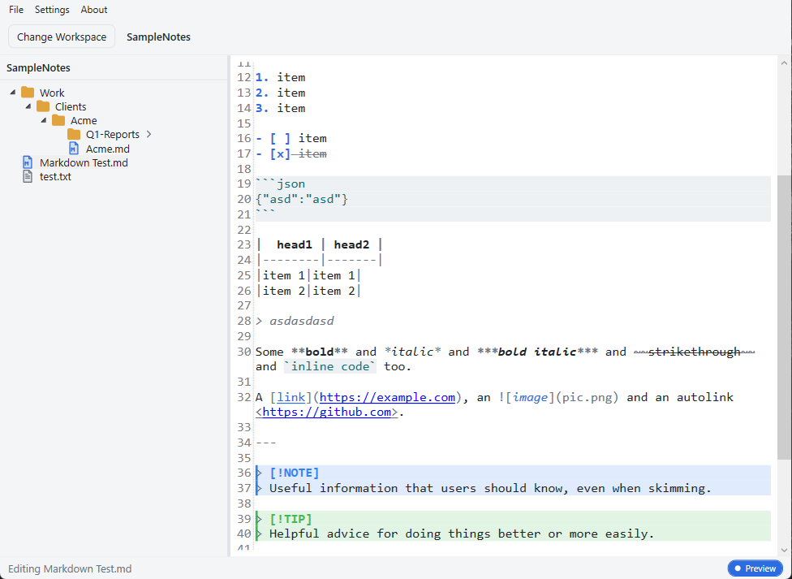

A fast, file-based notes manager for Windows. Your notes are plain files on disk — your folders are the database.
Windows 10/11 · .NET 8 · WPF
Self-contained — no .NET install required · Windows 10/11 64-bit

A focused editor that gets out of your way — and never traps your notes in a proprietary format.
Notes are ordinary .md and .txt files; categories are folders. No database, no cloud, no lock-in.
Render GitHub-Flavored Markdown inline while staying fully editable — including NOTE / TIP / WARNING alert callouts, tables, and code blocks.
Type / to insert tables, lists, callouts, code blocks, and images. The menu adapts to Markdown or plain-text files.
Enter continues a list and renumbers; empty items outdent or exit. Tab / Shift+Tab nest and un-nest.
Optional auto-save writes shortly after you stop typing, with a live status indicator — Saving… → Saved 2 mins ago.
Light and dark built in. Add your own by dropping a JSON palette into the themes folder — no rebuild. Sidebar icons are swappable SVGs.
Close Notty, open the folder in Windows Explorer, and every note is right there as a plain file. Back it up, sync it, grep it, or edit it in any other app — it's just files.
# A workspace is just a folder you pick Notes/ ├─ Work/ │ ├─ Meeting Notes.md │ └─ Sprint Plan.md ├─ Personal/ │ ├─ Journal.md │ └─ Shopping List.txt └─ Learning/ └─ Networking.md
Download the latest release, or build from source in a couple of commands.
dotnet command.# clone git clone https://github.com/Blankscreen-exe/Notty-Text-Editor.git cd Notty-Text-Editor # run dotnet run --project src/Notty.App # or build a release binary dotnet build Notty.sln -c Release